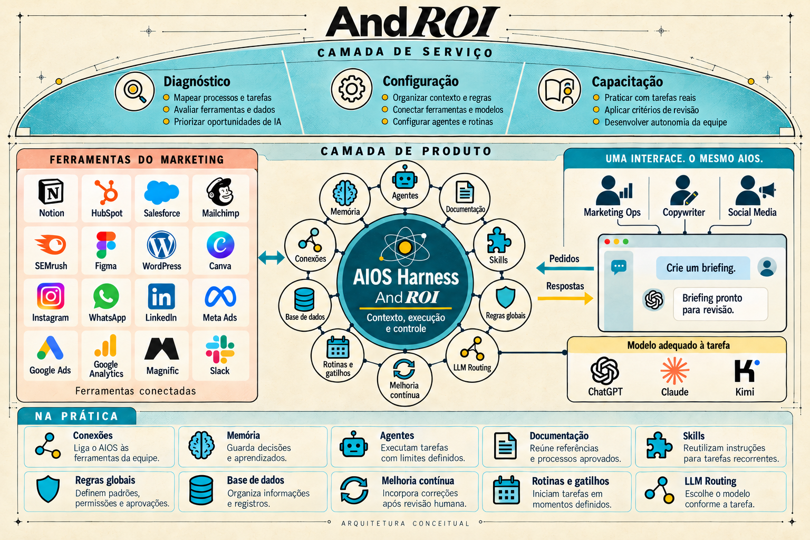

Equipe enxuta
Dez profissionais atendem Proauto, Velox e Blocks, entre BH e Campinas.
Para Christiano Reis e gerência de Marketing. Um primeiro fluxo em uso, com revisão humana e capacitação aplicada.
O desafio é transformar iniciativas individuais em uma rotina comum.
Dez profissionais atendem Proauto, Velox e Blocks, entre BH e Campinas.
O Claude já faz parte do trabalho, mas cada pessoa usa de um jeito.
Falta um processo comum para salvar e compartilhar o que foi construído.
A transição para seguradora pede atenção à comunicação.
Orientações aprovadas pela Proauto precisam acompanhar a criação e a revisão das peças.
Ferramentas, ambientes e acessos passam pela aprovação da área de tecnologia.
A equipe dirige. Nós organizamos as condições para a IA ajudar.
Público, tom de voz, exemplos e orientações aprovadas em uma base organizada.
Briefing, criação, revisão e registro em etapas documentadas.
Usuários-chave praticam e registram dificuldades antes da expansão.
Entrega contratada: implantação assistida e documentada.
Parceria de transformação em IA para marketing: diagnóstico, configuração e capacitação aplicada.
Arquitetura que organiza contexto, instruções, ferramentas, memória e aprovações.
Produto em desenvolvimento para apoiar decisões de marketing e investimento com evidências.

Marca → diretrizes → rascunho → checklist → aprovação → registro
Objetivo, público, canal e materiais autorizados orientam o briefing da Proauto.
A IA consulta a base e gera o rascunho. O checklist sinaliza pontos de atenção.
Uma pessoa aprova ou pede ajustes. Peça, fontes e correções ficam registradas.
Um fluxo · até quatro usuários-chave · capacitação aplicada.
Mapear usos, arquivos, ferramentas, TI e tempo atual. Organizar as três marcas e aprovar responsáveis e critérios de aceite.
Configurar o fluxo: instruções, briefing, checklist e registro. Testar, ajustar e validar o MVP com os quatro usuários-chave.
Capacitação aplicada ao fluxo, com prática assistida. Entregar a V1 validada, guia operacional e melhorias priorizadas.
Ampliar só depois de medir, com escopo e orçamento próprios.
Ferramentas autorizadas, permissões limitadas ao fluxo. A Proauto aprova cada peça.
Sem publicação automática, reconstrução de sites, CRM ou tratamento de bases de associados.
Comparar tempo e retrabalho em cinco briefings aprovados. Tempo liberado é capacidade; economia de caixa exige redução de despesa.
Setup de um mês. Acompanhamento após o aceite final.
Diagnóstico, base das três marcas, um fluxo, até quatro usuários-chave e capacitação aplicada.
Mínimo de três meses. Até oito horas mensais para reunião, suporte, diretrizes e ajustes no fluxo.
R$ 22.100 em serviços: setup + três mensalidades.
Na contratação do setup.
No aceite do MVP, a primeira versão funcional.
Na entrega documentada. A mensalidade começa após o aceite final.
O acompanhamento mantém o foco no fluxo contratado.
Reunião, suporte e ajustes usam a mesma franquia. Horas não acumulam. Excedentes: orçamento aprovado.
Licenças, consumo de modelos e infraestrutura são pagos diretamente pela Proauto, mediante aprovação.
Confirmar emissor e tratamento fiscal. O total de R$ 22.100 não inclui terceiros.
A primeira decisão: aprovar o piloto com controle humano.
Christiano e gerência indicam fluxo, quatro participantes e responsável pelo aceite. TI aprova acessos.
Formalizar, diagnosticar, configurar, capacitar e documentar os testes e as correções.
Avaliar cinco briefings, uso e indicadores. Priorizar o retainer e dimensionar a expansão.